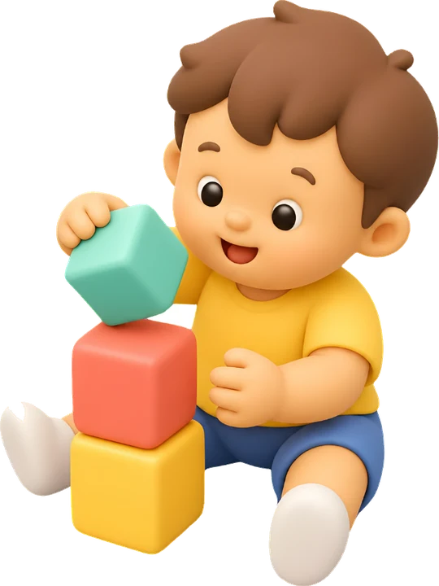

Methodology
Design process
My approach is iterative and collaborative, with frequent stakeholder touchpoints so we stay aligned. This is how I solve learning problems and create training that helps people do their jobs better.

- 01
Understand the challenge
I ask what’s standing in the way and work with stakeholders to uncover the real performance issue, so we solve the right problem.
Output: Analysis summary and performance gapSee it in Asthma Management: Workplace Scenarios
- 02
Map what success looks like
I define success on the job by focusing on actions, not just answers, so people can make the right call when it counts.
Output: Objectives mapped to the decision that evidences eachSee it in Safeguarding the Start
- 03
Build with intention
I storyboard, prototype and test early to make sure everything feels useful and aligned with the business goals.
Output: Interface designs and prototypesSee it in Clinical Handover with ISBAR
- 04
Layer in feedback
I add coaching and reflection so learners can practise safely and build confidence before going live.
Output: Consequence layers, debriefs and AI feedbackSee it in EYLF 2.0 Digital Learning Stories
- 05
Refine and deliver
I smooth the flow, check accessibility, and make sure the course supports the people and the performance it was meant to serve.
Output: WCAG 2.1 AA checks, job aids, SCORM / xAPISee it in Environmental Compliance & Land Management
How I work with AI
An AI-assisted workflow, with a human in charge
AI speeds up the parts that used to take days. The judgement calls stay with me.
Drafting
I use AI tools to get past the blank page: first drafts of scenario dialogue, distractors and job aid copy. I then rewrite them against the objectives and the source guidance.
Building
AI coding assistance helps me build and debug my HTML, CSS and JavaScript course templates faster. I review, test and own every line that ships.
Voice-over
Some courses use AI voice-over so I can iterate on scripts quickly. Every voice line has captions and a matching transcript.
What stays human
Needs analysis, objectives, the decisions learners practise, accessibility checks and sign-off are mine. Nothing goes out unreviewed.